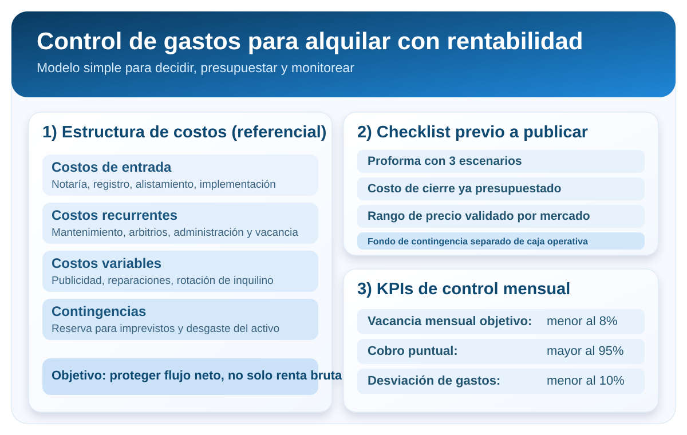

Gastos a tener en cuenta al invertir en un departamento para alquilar
Invertir en un departamento para alquilar puede ser una excelente decisión patrimonial, pero solo si la rentabilidad se calcula con rigor. Muchos propietarios sobreestiman el retorno porque proyectan con la renta mensual esperada y se olvidan de costos operativos, vacancia, mantenimiento, impuestos y gastos de reposición.
Este artículo aterriza, en formato práctico, los gastos que realmente debes considerar antes de comprar o poner en alquiler un inmueble. El objetivo es que tomes decisiones con flujo de caja neto, no con estimaciones optimistas.
Si manejas bien estos costos desde el inicio, podrás fijar mejor el precio, seleccionar mejor al inquilino y mantener una operación más estable en el tiempo.
Dato clave: la rentabilidad que importa no es la renta bruta, sino el flujo neto sostenido después de todos los costos.
Resumen rápido
- Evalúa rentabilidad con flujo neto, no solo con renta bruta.
- Separa costos de entrada, costos recurrentes y contingencias.
- Modela escenarios de vacancia y mantenimiento antes de invertir.
- Mide KPIs mensuales para corregir desvíos a tiempo.
Tabla de contenidos
- 1. Habla con un administrador de propiedades en el mercado
- 2. Habla con otros inversionistas inmobiliarios
- 3. Llama a las empresas de servicios públicos
- ¿Cómo armar una proforma?
- No olvide los costos de cierre
- Gastos de publicidad y marketing
- El flujo de caja se ve afectado
- Lista de verificación de gastos de propiedad de alquiler
° 1: habla con un administrador de propiedades en el mercado
Si quieres proyectar costos reales, conversa con operadores que gestionan alquileres todos los meses. Un administrador con experiencia te dará una lectura más realista de gastos que no suelen aparecer en simulaciones teóricas: frecuencia de incidencias, tiempos de vacancia entre contratos, costo promedio de puesta a punto y comportamiento de cobro por zona.
Este paso es clave porque te permite salir del supuesto genérico y entrar en datos de ejecución. No es lo mismo administrar un depa nuevo en zona prime que un inmueble con más antigüedad donde los ciclos de mantenimiento son más exigentes.
Al hablar con un administrador, procura obtener métricas concretas:
- Porcentaje de vacancia anual por tipología de inmueble.
- Costo promedio de mantenimiento correctivo por año.
- Tasa de puntualidad de pago y costos asociados a cobranza.
- Tiempo medio para conseguir inquilino luego de publicar.
Aplicación práctica: usa esos datos para ajustar tu modelo financiero y evitar comprar o publicar con una expectativa de renta que luego no se sostiene operativamente.
° 2: habla con otros inversionistas inmobiliarios
Quien ya pasó por el proceso de compra, implementación, alquiler y administración puede mostrarte errores que no aparecen en una hoja de cálculo. Conversar con inversionistas activos acelera tu curva de aprendizaje y reduce decisiones costosas.
En estas conversaciones, enfócate en variables críticas:
- Cuánto gastaron realmente en acondicionar el inmueble antes del primer contrato.
- Qué costos no habían previsto al momento de comprar.
- Cuánto tiempo les tomó estabilizar su flujo mensual.
- Qué decisiones mejoraron su rentabilidad neta en los primeros 12 meses.
La diferencia entre una operación tensa y una operación saludable suele estar en detalles de ejecución, no solo en el precio de compra. Aprender de casos reales te permite ajustar expectativas y priorizar mejor el presupuesto inicial.
Aplicación práctica: documenta estos aprendizajes y conviértelos en checklist previo a invertir. Si no lo formalizas, terminarás repitiendo errores comunes del mercado.
Para complementar este punto, revisa también la guía específica de gastos después de comprar para alquilar en Lima, donde desglosamos impuestos y costos mensuales de operación.
°3 – Llama a las empresas de servicios públicos
Aunque en muchos contratos los servicios los paga el inquilino, conocer el histórico de consumo sigue siendo importante. Un inmueble con consumos atípicos puede tener problemas de instalaciones, equipos deficientes o hábitos de uso que luego afectan su atractivo comercial.
Además, en la etapa de visitas los prospectos suelen preguntar por costos mensuales aproximados. Tener un rango referencial de agua, luz y gas te ayuda a responder con claridad y filtrar mejor perfiles con capacidad real de sostener el inmueble.
Qué revisar antes de publicar:
- Promedio de consumo de los últimos meses.
- Existencia de deudas pendientes o regularizaciones.
- Estado de medidores y conexiones.
- Posibles reparaciones técnicas necesarias para estabilizar consumo.
Aplicación práctica: integra esta información en tu proforma como variable de riesgo operativo y no solo como dato informativo.
¿Cómo armar una proforma?
La proforma no es una plantilla decorativa: es tu mapa financiero. Debe mostrar con claridad cuánto entra, cuánto sale y qué tan sensible es tu operación ante cambios de mercado.
Una proforma sólida para alquiler debería incluir, como mínimo:
- Ingreso por renta mensual esperado en escenario base, conservador y exigente.
- Vacancia proyectada anual.
- Costos operativos recurrentes (administración, mantenimiento, arbitrios, entre otros).
- Costos no recurrentes (implementación, reposición de equipamiento, mejoras).
- Tributación aplicable y comisiones bancarias.
Recomendación técnica: no trabajes con un solo número de rentabilidad. Modela tres escenarios y compara el flujo neto anual. Si solo el escenario optimista “cierra”, la inversión puede ser frágil.
Aplicación práctica: actualiza la proforma trimestralmente y cada vez que cambie el contexto comercial de tu zona.
Si estás en etapa de definición de precio, te puede servir esta lectura de apoyo: cómo fijar un precio de alquiler competitivo en Lima.
No olvide los costos de cierre
Muchos inversionistas consideran el precio de compra, pero subestiman todo lo que se paga alrededor de la operación. Esos costos impactan directamente en el capital invertido real y, por lo tanto, en la rentabilidad neta.
Entre los costos de cierre y preparación más frecuentes están:
- Gastos notariales y registrales.
- Regularización documental o trámites pendientes.
- Puesta a punto para alquiler (pintura, correcciones, limpieza técnica).
- Reposición de elementos clave para hacer competitivo el inmueble.
Si no los incorporas desde el principio, terminas financiando con caja operativa lo que debió estar previsto en el presupuesto inicial.
Aplicación práctica: crea una bolsa de inversión inicial separada del flujo operativo mensual para que la operación no nazca presionada.
Gastos de publicidad y marketing
Un inmueble puede ser bueno, pero si no se presenta bien al mercado, tardará más en alquilarse y esa demora cuesta dinero. Cada semana de vacancia erosiona la rentabilidad anual.
El presupuesto comercial debe contemplar:
- Producción visual del inmueble (fotos, video o material de soporte).
- Publicación en portales y canales adecuados al perfil objetivo.
- Tiempo de gestión comercial y seguimiento de leads.
- Ajustes de anuncio y precio según desempeño de la campaña.
En términos financieros, gastar bien en comercialización suele ser más eficiente que mantener semanas de vacancia por una salida al mercado débil.
Aplicación práctica: mide semanalmente la conversión de anuncio a visita y de visita a propuesta. Ese indicador te dirá si debes ajustar precio, narrativa o ambos.
También puedes revisar cómo publicar tu depa para recibir mejores consultas y reducir tiempo de vacancia desde la primera semana.
El flujo de caja se ve afectado
La métrica que importa para decidir si una inversión funciona no es la renta bruta publicada, sino la caja neta sostenida en el tiempo. El flujo de caja puede deteriorarse por pequeños desvíos acumulados: demoras en cobro, mantenimiento no presupuestado, rotación alta o mala calibración de precio.
Para proteger el flujo mensual, conviene trabajar con reglas de control:
- Definir un fondo de contingencia para imprevistos.
- Establecer alertas de mora tempranas y protocolo de cobranza.
- Revisar indicadores de ocupación y puntualidad cada mes.
- Revisar estrategia comercial cuando sube la vacancia.
Aplicación práctica: convierte la administración del alquiler en un sistema medible, no en una secuencia de urgencias.
Para profundizar en control de riesgo, enlaza este artículo con 5 señales para reducir morosidad en alquiler y criterios para evaluar inquilinos.
Lista de verificación de gastos de propiedad de alquiler
Antes de comprometer capital, valida esta lista mínima para reducir riesgo financiero:
- Proforma en tres escenarios con flujo neto.
- Costos de cierre, implementación y alistamiento identificados.
- Gastos operativos recurrentes y extraordinarios estimados.
- Estrategia comercial y presupuesto de publicación definido.
- Plan de cobranza, mantenimiento y seguimiento mensual.
- Fondo de contingencia separado de la caja operativa.
Si alguno de estos puntos está incompleto, la recomendación es no acelerar la decisión. Un ajuste previo vale más que corregir con presión cuando el inmueble ya está en operación.
Visual de control de costos

Referencia visual para organizar presupuesto inicial, costos recurrentes y control mensual de rentabilidad.
Preguntas frecuentes
¿Cuál es el error más común al invertir para alquilar?
Calcular la rentabilidad con renta bruta y no con flujo neto real. Cuando no se incluyen vacancia, mantenimiento y costos operativos, la proyección queda inflada.
¿Qué porcentaje debo reservar para contingencias?
No existe un único porcentaje para todos los casos. Depende del estado del inmueble y del tipo de operación, pero siempre conviene asignar una reserva anual específica para imprevistos.
¿Cada cuánto se actualiza una proforma?
Idealmente cada trimestre, o antes si cambian las condiciones de mercado, los costos de operación o la situación tributaria.
Conclusión
Invertir para alquilar no se trata solo de comprar bien; se trata de operar bien. La diferencia entre una renta estresante y una renta estable está en la calidad de tu modelo de costos y en la disciplina de seguimiento.
Si proyectas con realismo, controlas tus indicadores y ajustas con frecuencia, podrás sostener una rentabilidad neta más sana y una experiencia más predecible como propietario.